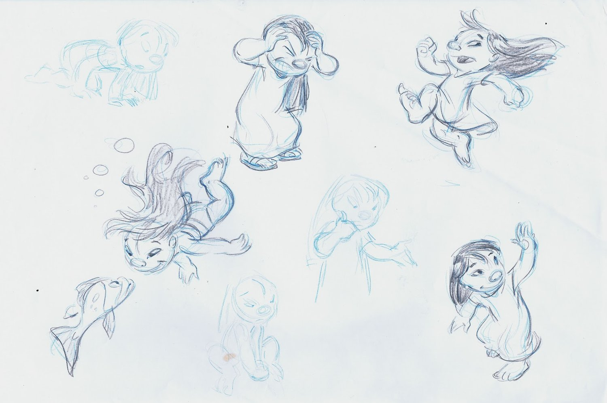

HISTORY
-
How did the Idea come?
One day, artist Chris Sanders drew a small blue creature with big ears. He imagined it living on a distant planet but somehow ending up on Earth. That’s how Stitch was born! Later, Chris and other creators decided to make a whole movie, where Stitch got a best friend—Lilo.

-

How was it made?
To make the movie look amazing, artists drew hundreds of pictures and brought them to life with animation. They even traveled to Hawaii to capture the real ocean, sand, and jungle! Actors also recorded voices for the characters to make them talk.
-
Animation
To make Lilo, Stitch, and their friends look alive, artists drew thousands of pictures! When played quickly, they created movement. This movie also used a rare technique—watercolor backgrounds. It made Hawaii look even more beautiful and magical!